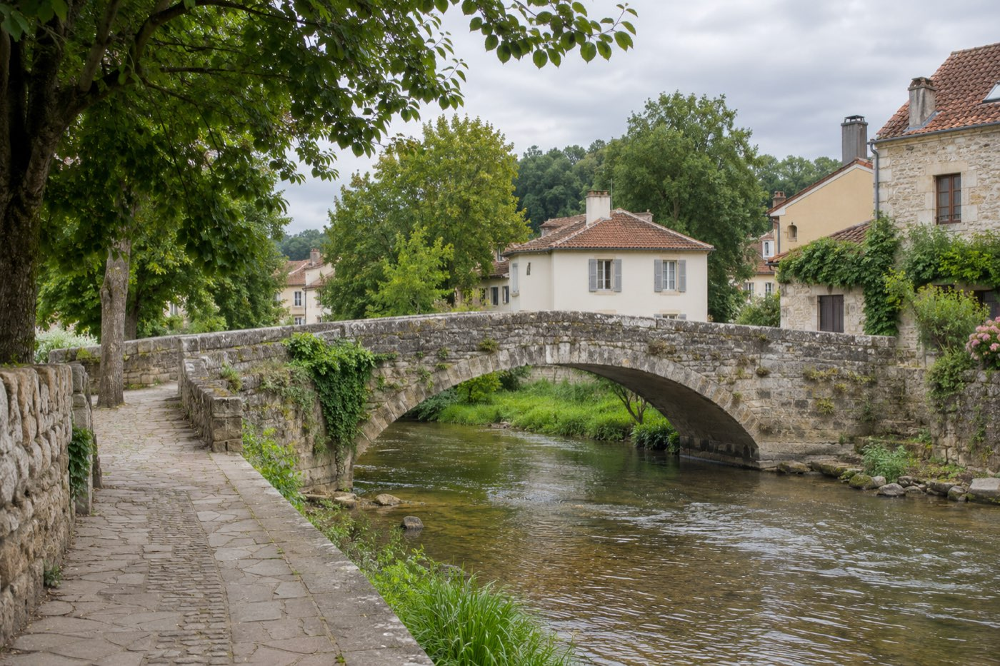

Momentro Guides · Family trips and events
How to turn short video clips into one coherent film
A few seconds at the station. A laugh at lunch. A camera clip from the walk. They already belong to the same memory. Here is how to help them feel that way on screen.

Start with a sentence about the film you want to watch
Open a folder after a family day out and the clips can feel like scraps: a view from the car, someone waving, a few seconds of lunch, a long shot of the river. Each makes sense to you because you were there.
A viewer needs a little help moving between them. Before choosing the order, finish one sentence: “This is our rainy day in the village,” or “This is the afternoon everyone came home for Dad’s birthday.”
That sentence gives the film a boundary. You can leave lovely material outside it and keep the originals for another time.
Group the fragments into small scenes
A file is whatever the camera recorded between pressing start and stop. A scene can include several files showing one shared activity or place.
Put the station clips together, the walk together, and lunch together. Footage from different devices can sit in the same scene: a phone caught the greeting, while the camera caught the place everyone arrived in.
Within each scene, look for enough context to understand where you are, an action worth following, and a reaction or detail. You do not need all three every time, but they give you something more useful than a row of unrelated highlights.
Try a simple sequence with the footage you have
Imagine you have these six fragments from a day trip:
- The village from the car: a brief arrival that shows the place.
- Everyone stepping onto the riverside path: the day starts moving.
- A child dropping a leaf into the water: a small action with a finish.
- Lunch and a shared laugh: the people become the centre.
- The empty path later: a little space after the busy scene.
- A last view through the car window: a natural return.
You have a short film already. It may not need every street, every meal or every camera angle. Add a clip when it helps someone understand the next moment or brings back something distinct.
Use the ordinary clips to connect the bigger moments
A doorway, a road, a place being set at the table, or coats going onto chairs can make a change of scene easier to follow. These are often the clips you almost overlook.
After the walk, a quick view of the café exterior can make lunch feel like the next part of the day. At a birthday, a room full of people can connect the candles to the conversations afterwards.
If you did not record a connecting shot, try moving directly to a clear view of the next scene. A short, honest jump can be enough. There is no need to reconstruct a moment you missed.
Listen before covering every clip with music
A familiar voice can explain a scene more quickly than a title. A laugh or the sound of rain can carry the feeling between two views of the same place.
Listen to the original recordings as you select them. Keep the pieces you would want to hear again, and notice where wind or handling noise overwhelms the moment. Music can support the film, while voices still need room to be heard.
These are general editing choices. Use the sound controls available in your editor, then listen to the joins during review. A sudden change in level can interrupt a film even when the pictures fit together.
Give mixed footage a chance to belong together
A phone, camera, drone and relative’s recording will rarely look identical. A wider view can establish the route; a closer phone clip can bring you back to the people. Their different perspectives can be useful.
Watch for unnecessary repetition when two devices recorded the same action. Choose the view that adds something, and let the next clip move the scene along. When a vertical clip sits among horizontal ones, check the preview to make sure the important person or action remains visible in the layout you use.
You do not need to make every source look as though one camera filmed it. Clear scenes and a sensible order do much of the work.
Build the draft, then watch the joins
Keep the source collection and its backup safe. Bring the selected set into a Momentro project on your computer when you are ready to make a draft.
Clips from several people and devices can add up to a large amount of video. Momentro runs analysis and export on your computer, so those tasks do not require uploading the collection to a cloud editing service. Processing time depends on the files and the resources of your computer.
Start analysis, then get on with your day while it works. Come back to review the draft and make the adjustments you want. Watch where each scene hands over to the next, and whether the ending has time to settle. Then start export; the computer can keep working while you do something else.
Open the finished file before sharing it. If you can follow the day without explaining every cut, the fragments have become a film.
Give the small clips a film of their own.
Momentro helps turn selected family and travel clips into a draft you can review and export on your computer.